Shipping Location Performance
The Shipping Location Performance report gives an overview of consignment volume and shipping lead times from each of your shipping locations.
It comprises an Average Days from Shipping to Receipt by Carriers line graph, a Carrier Usage bar chart, an Average Days to Ship By Shipping Location bar chart, and a Consignments Over Time By Shipping Location line graph.
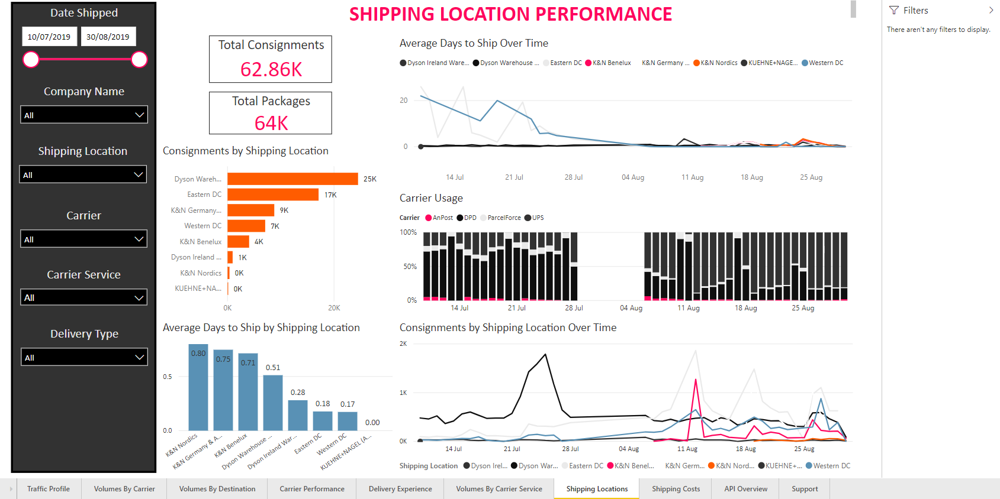Report Filters
The Shipping Location Performance report offers the following report-wide filters:
- Date Shipped - enables you to select consignments that were shipped within a given date range.
- Company - where applicable, enables you to select consignments that were shipped by a particular company within your group. You can select multiple companies if required.
- Shipping Location - where applicable, enables you to select consignments that were shipped from a particular shipping location.
- Carrier - enables you to select consignments that were shipped via a particular carrier.
- Carrier Service - enables you to select consignments that were shipped via a particular carrier service.
- Delivery Type - enables you to select consignments that were shipped as a particular delivery type (i.e. Delivery or Click and Collect).

Average Days from Shipping to Receipt by Carriers
The Average Days from Shipping to Receipt by Carriers chart shows the length of time between consignment creation and receipt by the carrier, by shipping location and over time. The x-axis of the graph represents time, the y-axis represents the number of days to carrier receipt for a consignment created on that day, and each line represents one of your shipping locations.
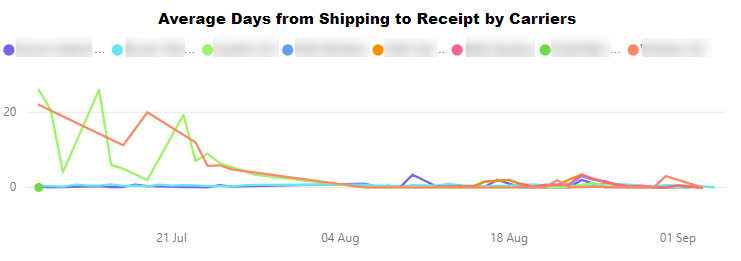Hover your mouse over the graph to see average ship time data for a specific day.
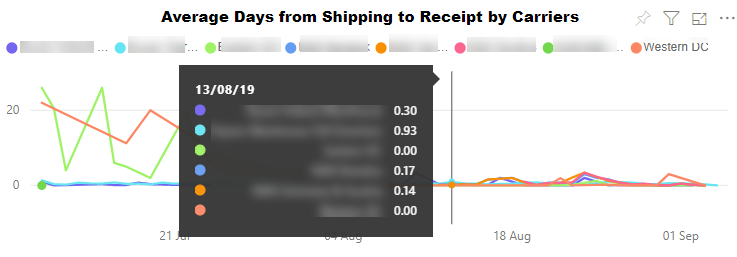Visualisation Filters
You can filter the data displayed on the Average Days from Shipping to Receipt by Carriers table using the following filters:
- Average Days to Ship (Numerical) - enables you to filter delivery locations by average ship time. For example, if you were to filter on is greater than or equal to 0.5, then only those locations with an average ship time of 0.5 days or more would be displayed.
- CreatedDateOnly (Basic, Advanced, and Relative Date) - enables you to select specific dates or date ranges to view.
- Shipping Location (Basic and Advanced) - enables you to select a shipping location or locations to view.
More Options
The following options are available from the More Options menu:
Viewing Data
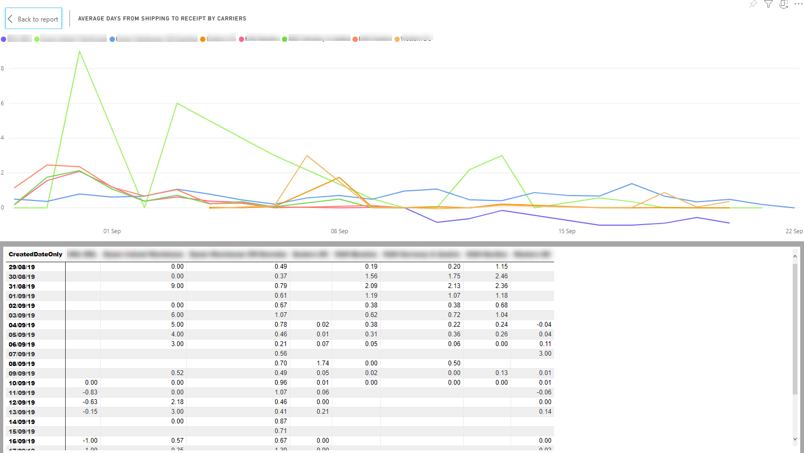The Average Days from Shipping to Receipt by Carriers chart's Show Data option shows the average time from shipping to carrier receipt for each of your delivery centres, broken down by date.
Carrier Usage
The Carrier Usage chart shows how many consignments were shipped by each of your carriers on a particular day. Each bar on the graph represents a single day, and each bar segment represents the proportion of that day's consignments that were shipped by a particular carrier.
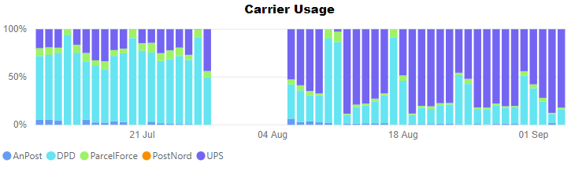Hover your mouse over a segment of the graph to see how many consignments were allocated to that carrier on that day.

Visualisation Filters
You can filter the carriers displayed on the Carrier Usage table using the following filters:
- Carrier Name (Basic and Advanced) - enables you to select a carrier or carriers whose services you want to view.
- Count of ConsignmentReference (Numerical) - enables you to filter by number of consignments shipped per carrier per day. For example, if you were to filter on is greater than 1000, then any data points in which the carrier had shipped 1000 or fewer consignments on that day would be ignored.
- CreatedDateOnly (Basic, Advanced, and Relative Date) - enables you to select specific created dates or date ranges to view.
More Options
The following options are available from the More Options menu:
You can also view the records that the visual's data was generated from by right-clicking on it and selecting View Records from the pop-up menu.
Viewing Data
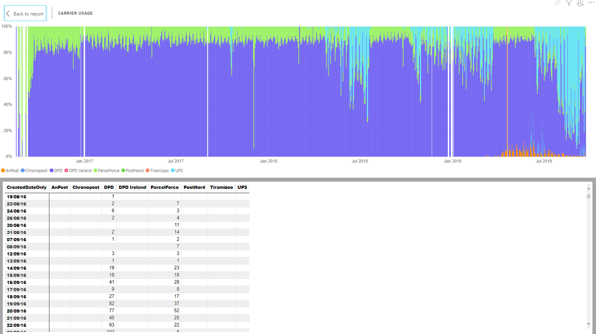The Carrier Usage chart's Show Data option shows how many consignments each of your carriers shipped on each day.
Average Days to Ship by Shipping Location
The Average Days to Ship by Shipping Location chart shows the average time from consignment creation to carrier receipt by shipping location. Each bar on the graph represents one of your shipping locations.
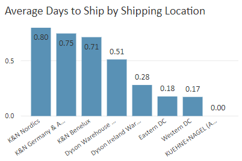Visualisation Filters
You can filter the shipping locations displayed on the Average Days to Ship by Shipping Location table using the following filters:
- Average Days to Ship (Numerical) - enables you to filter delivery locations by average ship time. For example, if you were to filter on is greater than or equal to 1, then only those locations with an average ship time of 1 days or more would be displayed.
- Shipping Location (Basic and Advanced) - enables you to select a shipping location or locations to view.
More Options
The following options are available from the More Options menu:
- Open Comments
- Export Data
- Show Data
- Spotlight
- Sort Descending
- Sort Ascending
- Sort by Shipping Location / Average Days to Ship
Viewing Data
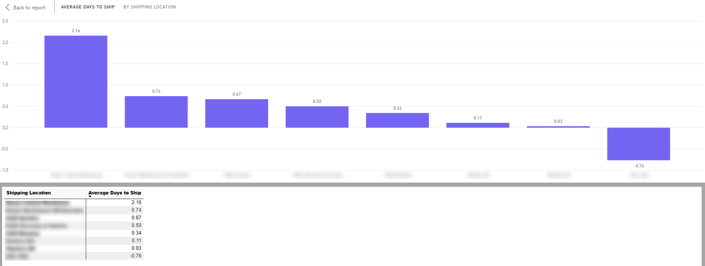The Average Days to Ship by Shipping Location chart's Show Data option shows the average ship time for each of your shipping locations.
Consignments Over Time by Shipping Location
The Consignments Over Time by Shipping Location chart shows how the number of consignments shipping from each of your shipping locations has changed over time. Each line on the graph represents one of your shipping locations.
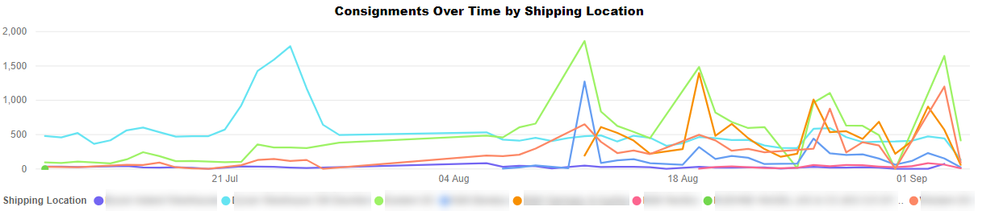Hover your mouse over a particular date on the chart to see how many consignments shipped from each of your locations on that day.
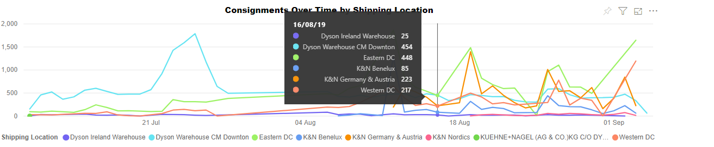Visualisation Filters
You can filter the carriers displayed on the Consignments Over Time by Shipping Location table using the following filters:
- Consignments (Numerical) - enables you to filter by number of consignments shipped per day. For example, if you were to filter on is greater than 1000, then any data points in which the carrier had shipped 1000 or fewer consignments on that day would be ignored. In this example, the y-axis of the graph is effectively skewed so that it starts at 1000 rather than 0.
- Date Created (Basic, Advanced, and Relative Date) - enables you to select specific created dates or date ranges to view.
- Shipping Location (Basic and Advanced) - enables you to select a shipping location or locations to view.
More Options
The following options are available from the More Options menu:
Viewing Data
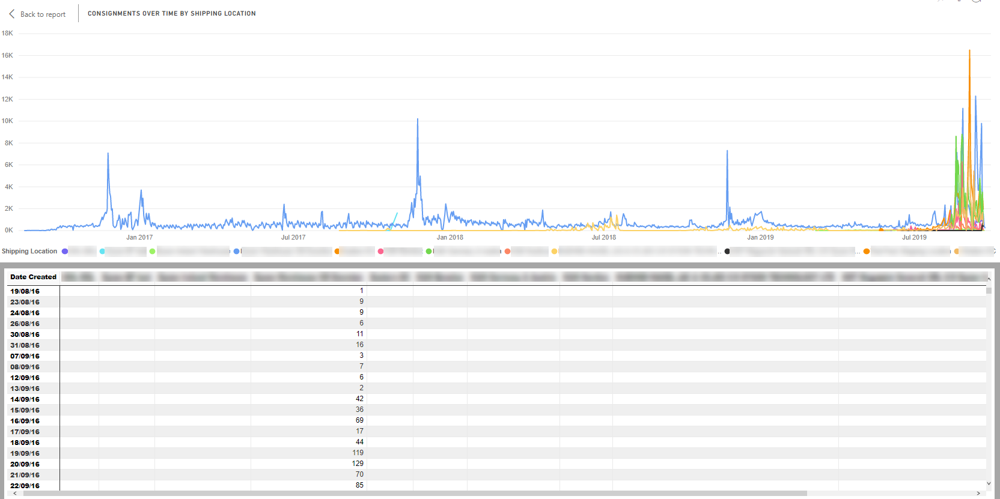The Consignments Over Time by Shipping Location chart's Show Data option shows the number of consignments that were shipped from each of your shipping locations on each day in your dataset.